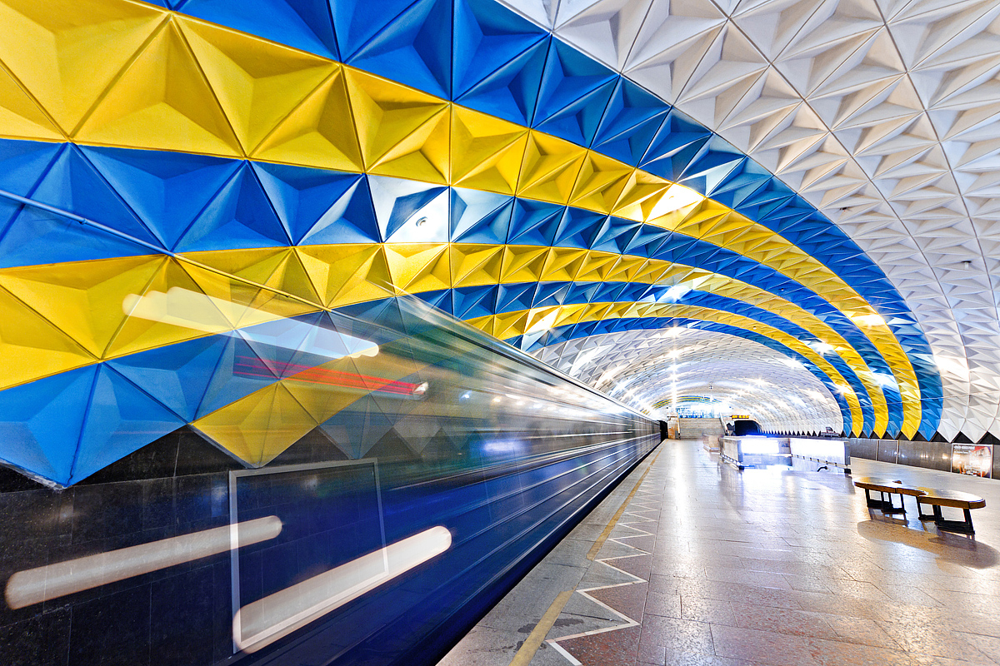
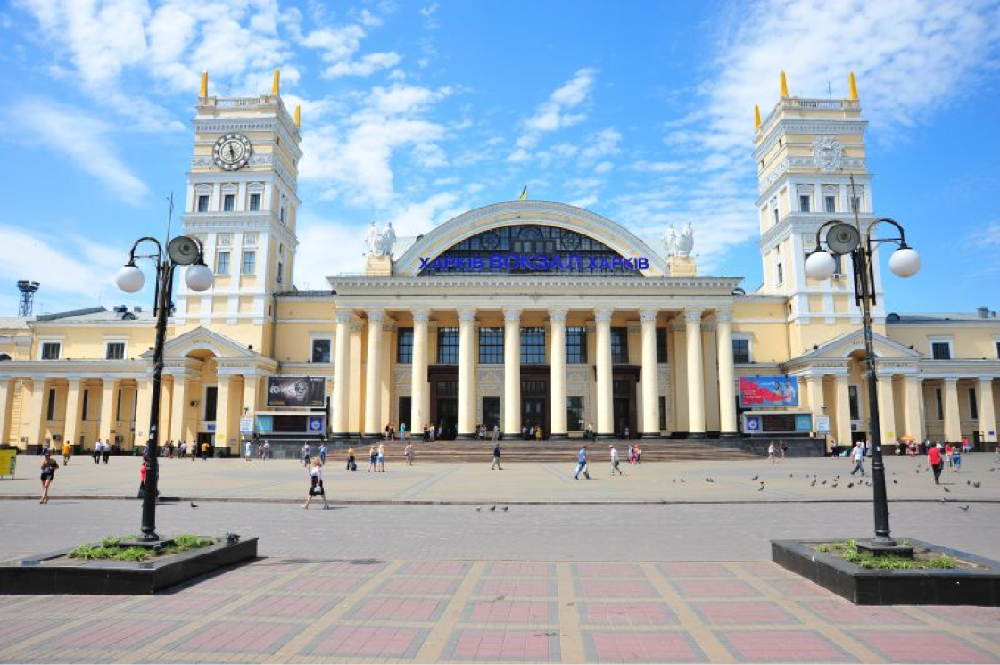

Мост всех влюблённых на лопанской стрелке в Харькове (H1)
{kind=link}
Место слияния двух харьковских рек называется Лопанской стрелкой. Существует одна из исторических версий, что именно здесь возникло первое поселение, впоследствии выросшее в большой и красивый город – Харьков. Лопанская стрелка огражена красивой набережной – изящные кованые решетки перемежаются гранитными опорами с шарами. Прилегающий сквер «Стрелка» утопает в зелени и цветочных клумбах. На набережной есть мост, который был построен в 2010, и теперь часто называют Мостом влюбленных. Он соединяет центральную часть города со стороны улицы Университетской с историческим районом Москалевкой возле здания цирка, где первоначально селились небогатые казаки и отставные солдаты. Изначально мост был не временным и назывался Марьинским(Цыганский), он был разрушен во время войны.
В 1976 году на его месте возвели временный деревянный пешеходный мостик. Мост крепился на толстых стальных канатах на опорах по краям моста, и немного раскачивался от порывов ветра или проходящих людей. Сейчас его заменили на абсолютно новый мост, а железные тросы, похожие на корабельные ванты, остались. Влюбленные и молодожены часто вешают на ограждения моста замочки, как символ скрепления семейных уз или желания сохранить свои отношения.
Станция метро «Спорти́вная»(H2)
6-я станция Харьковского метрополитена. Расположена на Холодногорско-Заводской линии метро между станциями «Проспект Гагарина» и «Завод имени Малышева». Находится возле центрального стадиона «Металлист», что определило её название и архитектурное оформление в виде огромного спортивного зала
Двадцать третьего августа 1975 года в Харькове запустили первую очередь метро современной Холодногорско-Заводской ветки из восьми станций: от «Улицы Свердлова» (сейчас «Холодная гора») до «Московского проспекта» (сейчас «Турбоатом»). Он стал шестым по счету метрополитеном в стране и вторым в Украине. В 1950—1960-е годы город активно расширялся и застраивался, пока не оказался на грани транспортного коллапса. Узкие улицы, особенно в центре, уже не вмещали трамваи, автобусы и троллейбусы, а население перевалило за миллион. Разрешения на строительство метро в Харькове с большим скрипом добились у партийной верхушки в Москве — в то время на подземку могли претендовать только столицы союзных республик. «Бабель» рассказывает, как строили первую линию Харьковского метрополитена, почему сэкономили на оформлении станций и публикует архивные фото того времени.
{kind=link}
Одного разу він покинув свої корови і подряпавсь на самий грунь. Ледве помітною стежкою підіймавсь вище і вище, поміж густі зарослі блідої папороті, колючої ожини й малини. Легко перескакував з камінця на камінчик, перелазив через повалені дерева, продирався крізь гіллячки кущів. За ним підіймався з долини вічний шум річки, росли гори, і вже вставав на крайнебі блакитний привид Чорногори. Довгі плакучі трави крили тепер боки гори, дзвінки корів обзивались, як далеке зітхання, все частіше попадалось велике каміння, що далі, на самім вершку, творило хаос поламаних скель, списаних лишаями, здушених у гадючих обіймах корінням смерек. Під ногами в Івана кождий камінь вкривали рудаві мхи, грубі м'які, шовкові. Теплі і ніжні, вони ховали у собі позолочену сонцем воду літніх дощів, м'яко вгинались і обіймали ногу, як пухова подушка. Кучерява зелень гогозів і афин запустила своє коріння у глибінь моху, а зверху сипнула росою червоних та синіх ягід. Тут Іван сів одпочити. Ніжно дзвеніла над ним хвоя смерек, змішавшись з шумом ріки, сонце наллялозлотом глибоку долину, зазеленило трави, десь курився синій димок од ватри, з-за Ігриця оксамитовим гулом котився грім. Іван сидів і слухав, забувши зовсім, що має доглядати корови.
Южный вокзал (H3)
{kind=link}
Здание ж/д вокзала - воплощение искусства многих архитекторов и скульпторов на протяжении нескольких поколений. По бокам главного здания железнодорожного вокзала Харькова находятся 42-метровые башни, Южная и Северная. На Южной башни расположены часы, диаметром более 4 метров. 22 мая 1869 года в Харьков прибыл первый поезд. В одном из журналов писали: "В 11.30 харьковчане услышали первый свисток локомотива, — писал один из журналов. — Огромная толпа людей зашаталась, заговорила, заволновалась. Появился локомотив с гербами, флагами и гирляндами зелени, с музыкой. Толпа наблюдала, как плавно катилось "невиданное чудовище", потом кто-то выкрикнул "Ура!", грянул оркестр. Первый поезд состоял из нескольких вагонов и особой платформы-павильона, который был наполнен приличнейшими особами... Многие на платформе поезда пугались, на моих глазах один мужик ухватился руками за столб и заорал во все горло: "Держись крепче, Митюха!"
Здание ж/д вокзала - воплощение искусства многих архитекторов и скульпторов на протяжении нескольких поколений. По бокам главного здания железнодорожного вокзала Харькова находятся 42-метровые башни, Южная и Северная. На Южной башни расположены часы, диаметром более 4 метров. 22 мая 1869 года в Харьков прибыл первый поезд. В одном из журналов писали: "В 11.30 харьковчане услышали первый свисток локомотива, — писал один из журналов. — Огромная толпа людей зашаталась, заговорила, заволновалась. Появился локомотив с гербами, флагами и гирляндами зелени, с музыкой. Толпа наблюдала, как плавно катилось "невиданное чудовище", потом кто-то выкрикнул "Ура!", грянул оркестр. Первый поезд состоял из нескольких вагонов и особой платформы-павильона, который был наполнен приличнейшими особами... Многие на платформе поезда пугались, на моих глазах один мужик ухватился руками за столб и заорал во все горло: "Держись крепче, Митюха!"
Инфраструктура вокзального комплекса Харькова (H4)
- ТК «Железнодорожник» (кафе, магазины, киоски и т.д.)
- Семь пассажирских платформ и два туннеля для выхода пассажиров
- Багажное отделение (обработка грузобагажа)
- Отель «Экспресс» (54 номера разных категорий)
- Привокзальная площадь
- Автопарковка
- А так же голуби 😄
- И McDonalds:)
Приклад заголовка п’ятого рівня (H5)
І ось раптом в сій дзвінкій тиші почув він тиху музику, яка так довго і невловимо вилась круг його вуха, що навіть справляла муку! Застиглий і нерухомий, витягнув шию і з радісним напруженням ловив дивну мелодію пісні. Так люди не грали, він принаймні ніколи не чув. Але хто грав? Навкруги була пустка, самотній ліс і не видно було живої душі. Іван озирнувся назад, на скелі, - і скаменів. На камені, верхи, сидів "той", щезник, скривив гостру борідку, нагнув ріжки і, заплющивши очі, дув у флояру.
- Пеший пункт нумерованого списку.
- Другий пункт нумерованого списку.
- Третій пункт нумерованого списку.
Приклад заголовка шостого рівня (H6)
І ось раптом в сій дзвінкій тиші почув він тиху музику, яка так довго і невловимо вилась круг його вуха, що навіть справляла муку! Застиглий і нерухомий, витягнув шию і з радісним напруженням ловив дивну мелодію пісні. Так люди не грали, він принаймні ніколи не чув. Але хто грав? Навкруги була пустка, самотній ліс і не видно було живої душі. Іван озирнувся назад, на скелі, - і скаменів. На камені, верхи, сидів "той", щезник, скривив гостру борідку, нагнув ріжки і, заплющивши очі, дув у флояру.
І ось раптом в сій дзвінкій тиші почув він тиху музику, яка так довго і невловимо вилась круг його вуха, що навіть справляла муку! Застиглий і нерухомий, витягнув шию і з радісним напруженням ловив дивну мелодію пісні. Так люди не грали, він принаймні ніколи не чув. Але хто грав? Навкруги була пустка, самотній ліс і не видно було живої душі. Іван озирнувся назад, на скелі, - і скаменів. На камені, верхи, сидів "той", щезник, скривив гостру борідку, нагнув ріжки і, заплющивши очі, дув у флояру.
Пісня, здавалось, бриніла вже в ньому. Він вийняв денцівку. Зразу йому не йшло, мелодія не давалась. Починав грати спочатку, напружував пам'ять, ловив якісь згуки, і коли врешті знайшов, що віддавна шукав, що не давало йому спокою, і лісом поплила чудна, не відома ще пісня, радість вступила у його серце, залляла сонцем гори, ліс і траву, заклекотіла в потоках, підняла ноги в Івана, і він, пожбурнувши денцівку в траву та взявшись у боки, закрутився в танці.
Михайло Коцюбинський
Знизу підіймавсь до Івана і затоплював гори глухий гомін ріки, а в нього капав од часу до часу прозорий дзвін колокільця. З-за галузки смереки виглядали зажурені гори, напоєні сумом тіней од хмар, що все стирали бліду усмішку царинок. Гори щохвилини міняли свій настрій: коли сміялась царинка, хмурився ліс. І як трудно було вдивитись в те рухливе обличчя гір, так трудно було дитині спіймати химерну мелодію пісні, що вилась, тріпала крильцями коло самого вуха і не давалась.
Зверніть увагу!
По горах, долами й верхами, тяглися святочно прибрані люди. Зелена отава царинок розцвіталася раптом, вздовж Черемошу плив різнобарвний потік, а десь високо, на чорному запиналі смерекових лісів, жаром горів під ранішнім сонцем червоний дашок гуцульського парасоля. Незабаром Іван побачив стрічу ворожих родів. Вони вже вертали з храму, тато був трохи напитий.
Раптом на вузенькій дорозі, між скелею і Черемошем, зробився тиск. Вози, кінні і піші, чоловіки й жінки - спинились і збились в купу. В лютому Євалті, що звіявсь одразу, як вихор, невідомо од чого, заблищали залізні бартки та заскакали перед самим обличчям